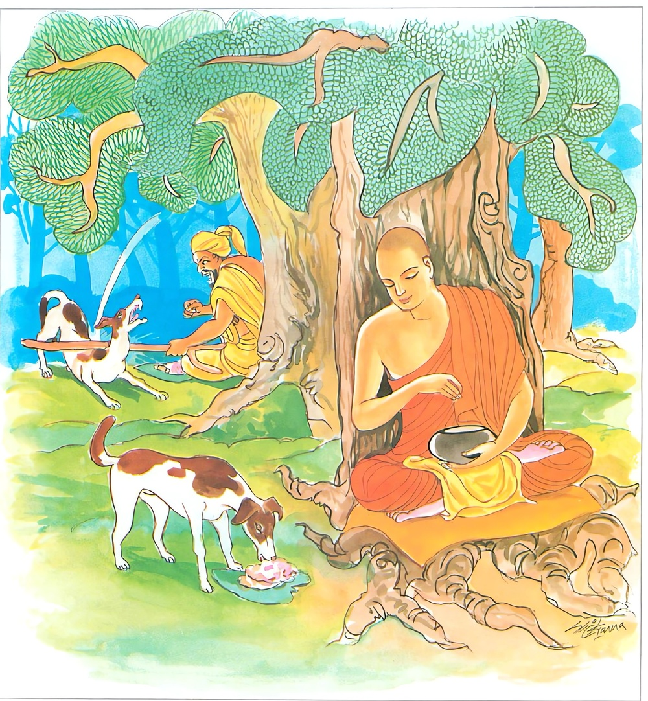
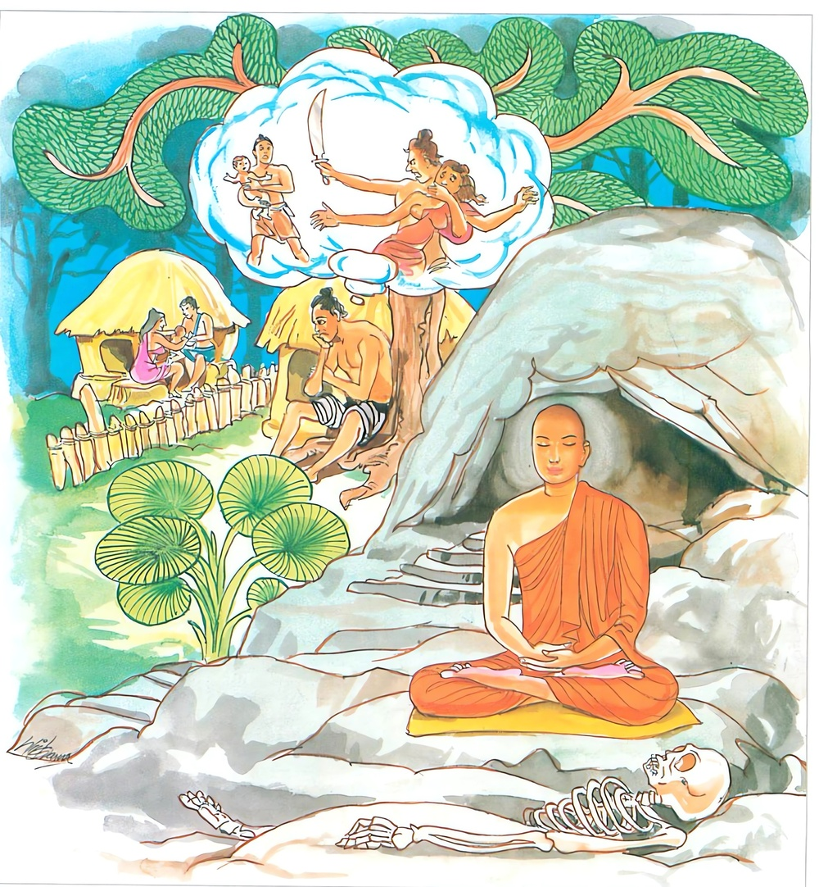
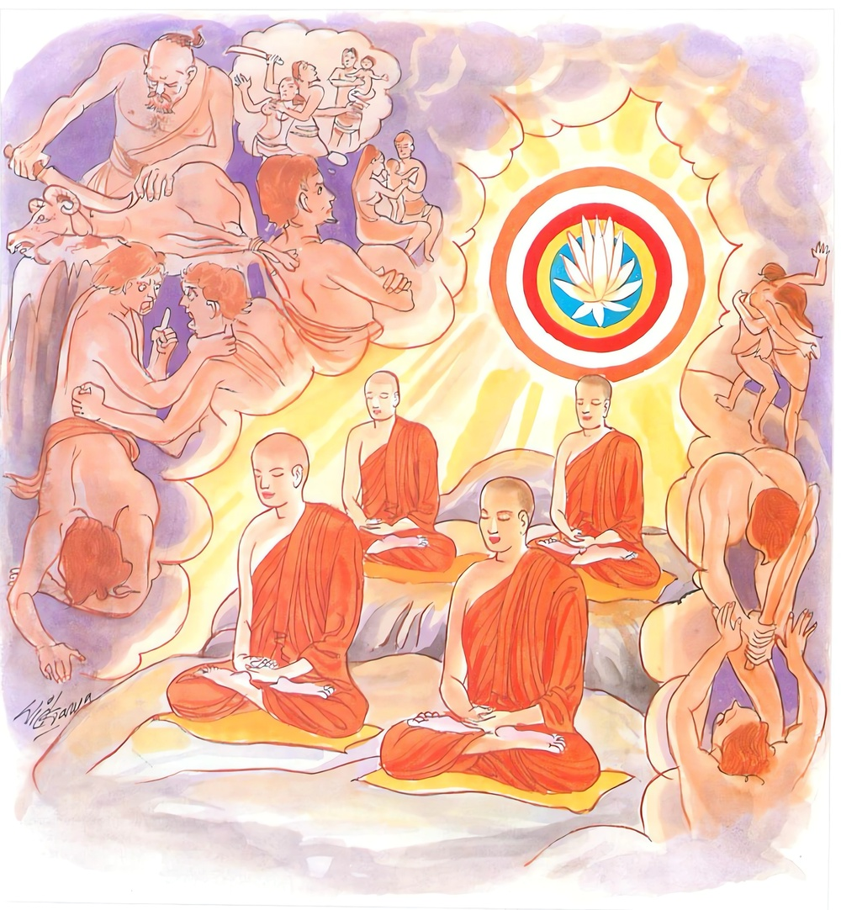

17-8 සවග මහණුන්ගේ අසංවරය
මෙම කතාව ධම්මපද අටුවාවෙන් ද කියවන්න.
කායප්පකොපං රක්ඛෙය්ය කායෙන සංවුතො සියා
කායදුච්චරිතං හිත්වා කායෙන සුචරිතං චරෙ.
(ත්රිවිධ) කායදුශ්චරිතය රක්නේ ය (හෙවත් කායදුශ්චරිතයෙන් දුරු වන්නේ ය). කායද්වාරයෙන් සංවෘත වන්නේ ය. කායදුශ්චරිතය හැර කයින් සුසිරිත් පුරන්නේ ය.

වචීපකොපං රක්ඛෙය්ය වාචාය සංවුතො සියා
වචීදුච්චරිතං හිත්වා වාචාය සුචරිතං චරෙ.
(චතුර්විධ) වාග්දුශ්චරිතය රක්නේ ය (හෙවත් වාග්දුශ්චරිතයෙන් දුරු වන්නේ ය). වාග්ද්වාරයෙන් සංවෘත වන්නේ ය. වාග්දුශ්චරිතය හැර වාග්ද්වාරයෙන් සුචරිතය පුරන්නේ ය.
මනොපකොපං රක්ඛෙය්ය මනසා සංවුතො සියා
මනොදුච්චරිතං හිත්වා මනසා සුචරිතං චරෙ.
(ත්රිවිධ) මනෝදුශ්චරිතය රක්නේ ය (හෙවත් මනෝදුශ්චරිතයෙන් දුරු වන්නේ ය). මනෝවාරයෙන් සංවෘත වන්නේ ය. මනෝදුශ්චරිතය දුරු කොට මනඃසුචරිතය පුරන්නේ ය.

කායෙන සංවුතා ධීරා අථො වාචාය සංවුතා
මනසා සංවුතා ධීරා තෙ වෙ සුපරිසංවුතා.
යම් ප්රාඥ කෙනෙක් කායද්වාරයෙන් සංවෘත ද, නැවත වාග්ද්වාරයෙන් සංවෘත ද, මනෝද්වාරයෙන් සංවෘත ද, ඒ නුවණැත්තෝ ඒකාන්තයෙන් මනා කොට වසා රැක ගත් තුන් දොර ඇත්තෝ ය.

එක් දවසක් බුදුරජානන් වහන්සේ පණ්ඩුක - ලොහිතක - මෙත්තිය - භුම්මජක - අස්සජි - පුනබ්බසුක යන සවග මහණුන් දෙයතින් සැරයටිදඬු ගෙණ ලීයෙන් කළ පාවහන් ලා ගෙණ ගල්මතුපිට ඇවිදුනා කල්හි එයින් නැගි ‘ඛට, ඛට’ යන හඬ අසා “ආනන්ද! මේ ඇසෙන හඬ කිමැ?”යි අසා වදාළ සේක. එකල්හි ආනන්ද මහාස්ථවිරයන් වහන්සේ “ස්වාමීනි! සවගමහණෝ දෙයතින් සැරයටි ගෙණ ලී සෙරෙප්පු පය ලා ගෙණ ගල් මතුපිට එහා මෙහා ඇවිදින්නාහු ය, මේ ‘ඛට, ඛට’ හඬ උන්ගේ ගමන් නිසා නැගුනේ ය”යි සැළකළහ. ඉක්බිති බුදුරජානන් වහන්සේ ඒ අසා එසේ නො කරණ ලෙසට සිකපදයක් පණවා මේ ධර්මදේශනාව කළ සේක.
කායප්පකොපං රක්ඛෙය්ය කායෙන සංවුතො සියා,
කායදුච්චරිතං හිත්වා කායෙන සුචරිතං චරෙ.
.
වචීපකොපං රක්ඛෙය්ය වාචාය සංවුතො සියා,
වචීදුච්චරිතං හිත්වා වාචාය සුචරිතං චරෙ.
.
මනොපකොපං රක්ඛෙය්ය මනසා සංවුතො සියා,
මනොදුච්චරිතං හිත්වා මනසා සුචරිතං චරෙ.
.
කායෙන සංවුතා ධීරා අථො වාචාය සංවුතා,
මනසා සංවුතා ධීරා තෙ මෙ සුපරිසංවුතාති.
කායදුශ්චරිතය රක්නේ ය. කයින් සංවෘත වුවෙක් වන්නේ ය. කායදුශ්චරිතය හැරපියා කයින් සුචරිතය කරන්නේ ය.
වාග්දුශ්චරිතය රක්නේ ය. වචසින් සංවෘත වූවෙක් වන්නේ ය. වාග්දුශ්චරිතය හැරපියා වචසින් සුචරිතය කරන්නේ ය.
මනෝදුශ්චරිතය රක්නේ ය. මනසින් සංවෘත වූවෙක් වන්නේ ය. මනෝදුශ්චරිතය හැරපියා මනසින් සුචරිතය කරන්නේ ය.
ධෘතිමත් වූ යම් කෙනෙක් කයින් සංවෘත වූවෝ ද, නැවැත වචසින් සංවෘත වූවෝ ද, මනසින් සංවෘත වූවෝ ද ඒ ධෘතිමත් හු එකාන්තයෙන් මනාකොට සංවෘත වූවාහු වෙත්.
කායප්පකොපං රක්ඛෙය්ය = කායදුශ්චරිතය රක්නේ ය. කායදුශ්චරිතය නො කරන්නේ ය.
කායප්පකොප නම්: කාය කර්මද්වාරය කුප්පන කාය කර්මද්වාරයෙන් සිදුවන පාණඝාත - අදින්නාදාන - කාමමිච්ඡාචාර යන මේය.
කායෙන සංවුතො සියා = කයින් සංවෘත වූවෙක් වන්නේ ය.
කයින් සංවෘත වූයේ නම්: කායද්වාරයෙන් සිදුවන පව්කම් වලින් මුළුමනින්ම වැළකී සිටියේ ය.
කායදුච්චරිතං හිත්වා කායෙන සුචරිතං චරෙ = කායදුශ්චරිතය හැරපියා කයින් සුචරිතය කරන්නේ ය.
කායසුචරිතය නම්: කායද්වාරසංවරය පිණිස පණවා වදාළ ශික්ෂාපදයන් නො ඉක්මවා රැකීම ය. කර්මපථවිසින් ම ප්රාණඝාතාදී ව පව්කම් තුනෙන් වළකින්නහුගේ සිත්හි උපදනා චේතනාවිරතීහු ය. ඔහු කායදුශ්චරිතය හැර සිටිය යුතු ය.
වචීකොපං රක්ඛෙය්ය = වාග්දුශ්චරිතය රක්නේ ය. වාග් දුශ්චරිතය නො කරන්නේ ය.
වචීකොප නම්: වාකකර්මද්වාරය කුප්පන වාකකර්මද්වාරයෙන් සිදුවන මුසාවාද - පිසුණවචන - ඵරුසවචන - සම්ඵප්පලාප යන මේ ය.
වාචාං සංවුතො සියා = වචසින් සංවෘත වූවෙක් වන්නේ ය.
වචසින් සංවෘත වූයේ නම්: වාග්ද්වාරයෙන් සිදුවන පව්කම් වලින් මුළුමනින්ම වැළකී සිටියේ ය.
වචීදුච්චරිතං හිත්වා වාචාය සුචරිතං චරෙ = වාග්දුශ්චරිතය හැරපියා වචසින් සුචරිත කරන්නේ ය.
වාක්සුචරිත නම්: වාග්ද්වාරසංවරය උදෙසා පණවා වදාළ ශික්ෂාපදයන් නො ඉක්මවා රැකීම ය. කර්මපථවිසින් මුසාවාදා දී වූ. පව්කම් සතරින් වළකින්නහුගේ සිත්හි උපදනා චේතනාවිරතීහු ය. ඔහු වාග්දුශ්චරිතය හැර සිටිය යුතු ය.
මනොපකොපං රක්ඛෙය්ය = මනෝදුශ්චරිතය රක්නේ ය. මනෝදුශ්චරිතය නො කරන්නේ ය.
මනොපකොප නම්: මනසකර්මද්වාරයෙන් සිදුවන අභිඦ්ඣා - ව්යාපාද - මිච්ඡාදිට්ඨි යන මේ ය.
මනසා සංවුතො සියා = මනසින් සංවෘත වූවෙක් වන්නේ ය.
මනසින් සංවෘත වූයේ නම්: මනසකර්මද්වාරයෙන් සිදුවන පව්කම්වලින් මුළුමනින් වැළකී සිටියේ ය.
මනොදුච්චරිතං හිත්වා මනසා සුචරිතං චරෙ = මනෝදුශ්චරිතය හැරපියා මනසින් සුචරිත කරන්නේ ය.
මනස්සුචරිත නම්: කායවාග්ද්වාරදෙක්හි සංවරය උදෙසා පැණ වූ ශික්ෂාපදයන් නො ඉක්මවා රැකීම ය. කර්මපථවිසින් අනභිඦ්ඣා - අව්යාපාද - සම්මාදිට්ඨි යන මේ චේතනා සම්ප්රයුකත වූ ධර්ම තුන ද මනස්සුචරිත නම්. ඔහු මනෝදුශ්චරිතය හැර සිටිය යුතු ය. [1]
මේ අටුවා:- “ කායද්වාරෙ පඤ්ඤත්තසික්ඛාපදස්ස අවීතික්කමො කායසුචරිතං, වචීද්වාරෙ පඤ්ඤත්තස්ස සික්ඛාපදස්ස අවීතික්කමො වචීසුචරිතං, උභයත්ථ පඤ්ඤත්තස්ස සික්ඛාපදස්ස අවීතික්කමො මනොසුචරිතං, අයං පඤ්ඤත්තිකථා, පාණාතිපාතාදිහි පන විරමනතස්ස උප්පන්තා තිස්සො චෙතනාපි විරතියොපි කායසුචරිතං, මුසාවාදාදීහි විරමන්තස්ස චතස්සො චෙතනා විරතියොපි වචීසුචරිතං, අනභිඦ්ඣා අව්යාපාදො සම්මාදිට්ඨීති තයො චෙතනාසම්පයුත්තා ධම්මා මනොසුචරිතන්ති අයං කම්මපථා” යනු.
මේ කායසුචරිතාදීහු මෙසේ ප්රඤප්ති විසින් හා කර්මපථ විසින් දෙපරිදි දෙපරිදි වෙති යි දතයුතු ය.
කායෙන සංවුතා ධීරා = (යම්) ධෘතිමත්හු කයින් සංවෘතයෝ ද.
අථො වාචාව සංවුතා = නැවැත වචසින් සංවෘතයෝ ද
මනසා සංවුතා ධීරා තෙ වෙ සුපරිසංවුතා = ඒ ඨෘතිමත්හු එකාන්තයෙන් මනා කොට සංවෘත වෙත්. වසා රැක ගත් තුන් දොර ඇත්තාහ.
කය - වචන - සිත යන තිදොරින් සංවරයෙහි පිහිට ප්රාණඝාතාදී වූ පව්කම් නො කරණ නුවණැත්තෝ මනා කොට වසා ගත් අවුරා ගත් තුන්දොර ඇත්තාහු නම් වෙත්. “යෙ පණ්ඩිතා පාණාතිපාතාදීනි අකරොන්තා කායෙන, මුසාවාදාදීනි අකරොන්තා වාචාය, අභිඦ්ඣාදීනි අසමුට්ඨටපෙන්තා මනසා ච සංවුතා, තෙ ඉෂ ලොකස්මිං සුපරිසංවුතා සුරක්ඛිතා සුගො පිතා සුපිහිතද්වාරාති” යනු අටුවා.
ධර්මදේශනාවගේ අවසානයෙහි බොහෝ දෙන සෝවන් ඵලාදියට පැමිණියාහු ය.
ෂට්වර්ගීය භික්ෂුවස්තුව නිමි.
-
1-10 ‘පාපකාරී’ යනු බලනු. ↑